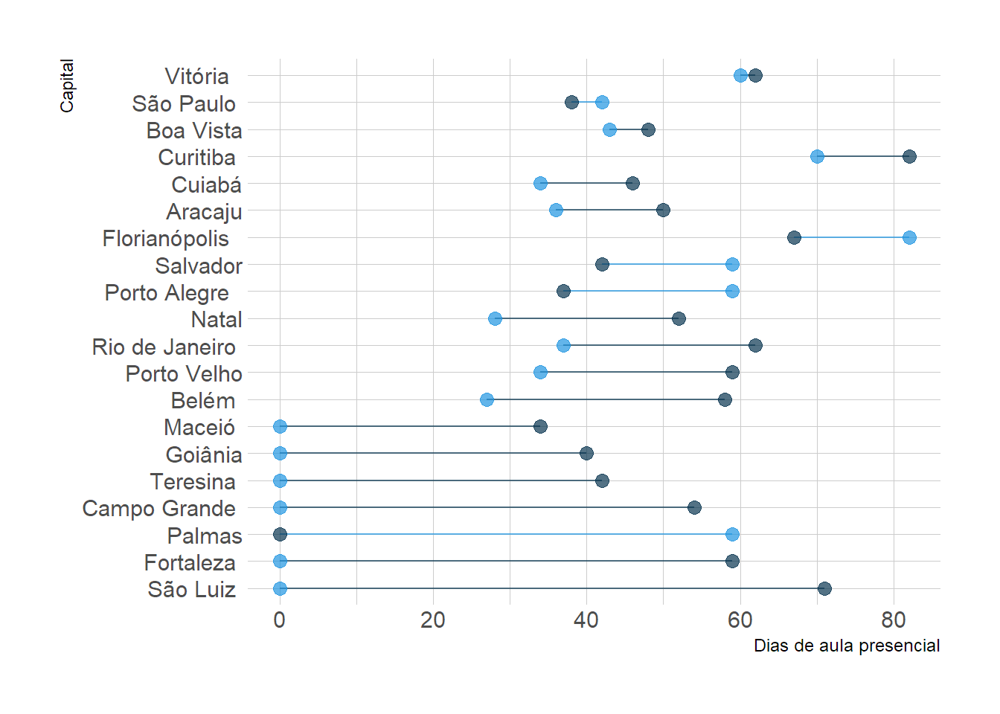

Carregando bibliotecas
library(dplyr)
library(ggplot2)
library(knitr)
library(kableExtra)
library(hrbrthemes)
library(viridis)
library(gridExtra)
library(tidylog)
options(scipen = 9999)
load('../dados/cronograma.rdata')
load('../dados/novo_cronograma.rdata')
load('../dados/novo_cronograma3.rdata')
load('../dados/novo_cronograma3.rdata')
load('../dados/medias.rdata')novo_cronograma <- novo_cronograma3 %>%
janitor::clean_names()
novo_cronograma_estadual <- novo_cronograma %>%
filter(rede == 'Estadual') %>%
rowwise() %>%
mutate(total_dias = sum(remoto+hibrido+presencial))
novo_cronograma_municipal <- novo_cronograma %>%
filter(rede == 'Municipal') %>%
rowwise() %>%
mutate(total_dias = sum(remoto+hibrido+presencial))A pandemia de COVID-19 causou diversos danos no acesso à educação no mundo todo. Segundo relatório do Banco Mundial1, entre fevereiro de 2020 até agosto de 2021, 1,6 bilhões de crianças estiveram com as escolas totalmente fechadas por 121 dias letivos, em média. Como consequência, o relatório prevê um impacto negativo considerável no aprendizado infantil bem como desdobramentos na economia e na desigualdade.
Esse fenômeno também atingiu o Brasil, que manteve boa parte de sua juventude afastada das escolas por um período significativo. Segundo dados do Censo Escolar realizado pelo Instituto Nacional de Estudos e Pesquisas Educacionais Anísio Teixeira (INEP) havia, em 2020, aproximadamente 40 milhões de jovens e crianças matriculados em escolas municipais e estaduais no país2. Com isso, é esperado que os órgãos responsáveis por esses alunos tenham traçado estratégias adequadas para o retorno à aula.
Este relatório apresenta uma breve descrição do calendário escolar estabelecido pelas secretarias de educação municipais e estaduais das 27 unidades federativas e 26 capitais brasileiras para o ano de 2021. Primeiramente, serão apresentados os dados das escolas municipais, seguido das informações estaduais e, por último, um comparativo entre ambos.
As informações foram coletadas através de publicações em diários oficiais bem como pedidos de acesso à informação feitos aos entes governamentais. Os dados apresentados consistem em análises feitas a partir dos cronogramas estabelecidos pelos estados e municípios para suas respectivas redes de educação. Foi observado um alto grau de discricionaridade atribuído aos diretores das escolas, não sendo possível afirmar que os valores estabelecidos foram seguidos à risca pelas unidades educacionais.
Ainda assim, o cronograma traçado pelo poder público é uma importante diretriz para um retorno organizado às aulas. Não apenas serve de sinalização pelo poder público sobre o impacto da pandemia na região, mas permite às escolas maior padronização do ano letivo.
Optou-se por excluir 2020 das observações desse relatório conforme a qualidade dos dados prestados pela administração escolar estavam consideravelmente precários. Foi identificado gravemente que nem mesmo as secretarias de educação conseguem estimar adequadamente o período de adoção de aulas no modelo híbrido ou remoto, com considerável poder de decisão sendo atribuído às escolas naquele ano.
Para 2021, no entanto, com a já consolidada situação da pandemia, todos os estados e capitais emitiram diretrizes sobre o retorno à aula, número de dias letivos e datas para adoção de cada modalidade (híbrido, presencial ou remoto).
A tabela 1 apresenta a média de dias letivos em cada região, por modalidade. Os valores por estado estão no gráfico 1, que ilustra o somatório de dias letivos nas capitais segundo os cronogramas estabelecidos pelas secretarias estaduais de educação. As cores estão categorizadas segundo a modalidade de ensino adotada. Os valores em vermelho estão presentes nas redes que obtiveram menos de 200 dias letivos no total, indicando o deficit no cronograma adotado para 2021.
media_estadualgraf <- novo_cronograma_estadual %>%
mutate(hibrido = as.numeric(hibrido),
presencial = as.numeric(presencial)) %>%
mutate(deficit = ifelse(200-total_dias > 0, 200-total_dias, 0)) %>%
arrange(desc(total_dias), desc(deficit), desc(remoto)) %>%
select(-c(rede, total_dias)) %>%
googleVis::gvisBarChart(
xvar = 'capital',
options = list(
bars = 'horizontal',
isStacked = TRUE,
height = 1080,
focusTarget = 'category',
colors = "['#527184', '#62b5ea', '#f6a323', 'red']",
fontName = 'Source Sans Pro',
fontSize = 14.4,
chartArea = "{height:\"90%\"}"
)
)
print(graf, "chart")Em média, as escolas públicas estaduais brasileiras tiveram 86 dias de aulas remotas, 63 de aulas no formato híbrido e 46 no formato presencial. Enquanto as regiões Norte, Nordeste e Centro-oeste tiveram uma média de no mínimo 89 dias de aulas remotas, as regiões sul e sudeste tiveram em média apenas 33 e 55 dias letivos nessa modalidade.
Essa diferença se deve a uma maior predominância do modelo híbrido nessas duas regiões, especificamente em São Paulo, que aplicou ensino híbrido por 150 dias letivos. No caso do ensino presencial, apesar de haver novamente predominância das regiões sul e sudeste perante às demais, a diferença na média é menor. Chama atenção o caso do Amazonas, com mais de 100 dias letivos nessa modalidade nessa modalidade, m número considerável quando comparado aos demais estados.
Em relação aos dias totais letivos, a maior parte dos estados (22 ou 81%) o cronograma estabelecido pelo estado foi de 200 dias letivos ou mais. 5 estados não somaram esse valor para o ano letivo: Acre, Rio Grande do Norte, Roraima, Tocantis e Espírito Santo.
Alguns estados tiveram o cronograma de 2021 impactado pelo atraso gerado na suspensão de aulas em 2020. O Acre, citado anteriormente por não ter alcançado os 200 dias letivos, iniciou seu ano letivo em 10/05. Similarmente, o estado do Rio Grande do Norte, que também não alcançou os 200 dias letivos, iniciou o ano letivo em 05/04.
A tabela 2 apresenta a média de dias letivos em cada região, por modalidade. Os valores por estado estão no gráfico 2, que ilustra o somatório de dias letivos nas capitais segundo os cronogramas estabelecidos pelas secretarias municipais de educação. As barras estão coloridas de acordo com a região.
media_estadualgraf <- novo_cronograma_municipal %>%
mutate(hibrido = as.numeric(hibrido),
presencial = as.numeric(presencial)) %>%
mutate(deficit = ifelse(200-total_dias > 0, 200-total_dias, 0)) %>%
arrange(desc(total_dias), desc(deficit), desc(remoto)) %>%
select(-c(rede, total_dias)) %>%
googleVis::gvisBarChart(
xvar = 'capital',
options = list(
bars = 'horizontal',
isStacked = TRUE,
height = 1080,
focusTarget = 'category',
colors = "['#527184', '#62b5ea', '#f6a323', 'red']",
fontName = 'Source Sans Pro',
fontSize = 14.4,
chartArea = "{height:\"90%\"}"
)
)
print(graf, "chart")As diferenças regionais entre os cronogramas das escolas públicas municipais são similares às vistas nas escolas estaduais. A média de dias no ensino remoto foi de 85 dias, valor praticamente idêntico àquele obtido na rede estadual (86). Para ensino híbrido, houve uma média de 74 dias letivos (11 dias a mais do que a média estadual), enquanto para o ensino presencial a média obtida foi de 36 dias (10 a menos que a média estadual).
Assim como antes, as regiões sul e sudeste tiveram consideravelmente menos aulas remotas do que as demais regiões, com grande prevalência da modalidade híbrida. Replicando o que ocorreu na rede estadual, as escolas municipais de São Paulo e Porto Alegre tiveram o maior número absoluto de aulas nesse formato. Similarmente, Manaus implementou um cronograma que, tal como na rede estadual, gerou o maior número de aulas presenciais.
Como antes, não houve grande variação no total de dias letivos entre as capitais. Apenas 4 municípios elaboraram um cronograma com menos de 190 dias letivos: Florianópolis (SC), Boa Vista (RR), Porto Velho (RO) e Natal (RN).
Da mesma forma que o ensino estadual do Rio Grande do Norte foi afetado pela pandemia de 2020, o ensino municipal de Natal em 2021 também teve seu cronograma atrasado. Com aulas iniciadas em em julho, a capital foi gravemente prejudicada em seu calendário escolar.
É possível observar que os municípios e estados costumam conter certo grau de sintonia nos valores estabelecidos pelos cronogramas oficiais. Entretanto, há algumas exceções. Os gráficos abaixo retratam a diferença entre os dias letivos em cada modalidae estabelecidos pela secretaria municipal e a secretaria estadual. Os valores estão ordenados da maior diferença (municipios com mais dias letivos naquela modalidade do que o estado) para a menor diferença (estados com mais dias letivos naquela modalidade que o município).
Importante pontuar que, no Brasil, o estado costuma ser o ente federativo responsável por escolas de ensino médio, enquanto o município é responsável pelas escolas de ensino infantil e fundamental. Por esse motivo, diferenças entre ambos podem ser justificáveis.
temp <- novo_cronograma_municipal %>%
rename(municipal_presencial = presencial, municipal_hibrido = hibrido, municipal_remoto = remoto, municipal_total_dias = total_dias) %>%
left_join(select(novo_cronograma_estadual, capital, remoto, hibrido, presencial, total_dias))
g1 <- temp %>%
mutate(dif = municipal_presencial-presencial) %>%
arrange(desc(dif)) %>%
mutate(capital=factor(capital, capital)) %>%
ggplot() +
geom_segment( aes(x=capital, xend=capital, y=presencial, yend=municipal_presencial), color="grey") +
geom_point( aes(x=capital, y=presencial), color='#083550', size=3, alpha = 0.7) +
geom_point( aes(x=capital, y=municipal_presencial), color='#1f95e1', size=3, alpha = 0.7) +
coord_flip()+
theme_ipsum() +
theme(
legend.position = "none",
) +
xlab("Capital") +
ylab("Dias de aula presencial")
g2 <- temp %>%
mutate(dif = municipal_hibrido-hibrido) %>%
arrange(desc(dif)) %>%
mutate(capital=factor(capital, capital)) %>%
ggplot() +
geom_segment( aes(x=capital, xend=capital, y=hibrido, yend=municipal_hibrido), color="grey") +
geom_point( aes(x=capital, y=hibrido), color='#083550', size=3, alpha = 0.7) +
geom_point( aes(x=capital, y=municipal_hibrido), color='#1f95e1', size=3, alpha = 0.7) +
coord_flip()+
theme_ipsum() +
theme(
legend.position = "none",
) +
xlab("Capital") +
ylab("Dias na modalidade híbrida")
g3 <- temp %>%
mutate(dif = municipal_remoto-remoto) %>%
arrange(desc(dif)) %>%
mutate(capital=factor(capital, capital)) %>%
ggplot() +
geom_segment( aes(x=capital, xend=capital, y=remoto, yend=municipal_remoto), color="grey") +
geom_point( aes(x=capital, y=remoto), color='#083550', size=3, alpha = 0.7) +
geom_point( aes(x=capital, y=municipal_remoto), color='#1f95e1', size=3, alpha = 0.7) +
coord_flip()+
theme_ipsum() +
theme(
legend.position = "none",
) +
xlab("Capital") +
ylab("Dias na modalidade remota")
g4 <- temp %>%
mutate(dif = municipal_total_dias-total_dias) %>%
arrange(desc(dif)) %>%
mutate(capital=factor(capital, capital)) %>%
ggplot() +
geom_segment( aes(x=capital, xend=capital, y=total_dias, yend=municipal_total_dias), color="grey") +
geom_point( aes(x=capital, y=total_dias), color='#083550', size=3, alpha = 0.7) +
geom_point( aes(x=capital, y=municipal_total_dias), color='#1f95e1', size=3, alpha = 0.7) +
coord_flip()+
theme_ipsum() +
theme(
legend.position = "none",
) +
xlab("Capital") +
ylab("Total de dias letivos")
grid.arrange(g1, g2, g3, g4)
g5 <- temp %>%
mutate(dif = municipal_total_dias-total_dias) %>%
arrange(desc(dif)) %>%
mutate(capital=factor(capital, capital)) %>%
ggplot() +
geom_segment( aes(x=capital, xend=capital, y=total_dias, yend=municipal_total_dias), color="grey") +
geom_point( aes(x=capital, y=total_dias), color='#083550', size=3, alpha = 0.7) +
geom_point( aes(x=capital, y=municipal_total_dias), color='#1f95e1', size=3, alpha = 0.7) +
coord_flip() +
xlab("Capital") +
ylab("Total de dias letivos")
grid::grid.draw(cowplot::get_legend(g5))No total de dias letivos, somente Tocantis e Espírito Santo apresentam valor consideravelmente mais baixos que suas respectivas capitais e também abaixo da diretriz de 200 dias letivos seguida pela maior parte dos entes. Inversamente, Florianópolis e Porto Velho foram as únicas capitais com consideravelmente menos dias letivos que sua respectiva rede estadual de ensino e abaixo dos 200 dias.
novo_cronograma_estadualnovo_cronograma_municipalhttps://documents1.worldbank.org/curated/en/416991638768297704/pdf/The-State-of-the-Global-Education-Crisis-A-Path-to-Recovery.pdf↩︎
Valor obtido considerando o número de IDs de matrículas distintas presentes nos dados do censo escolar para 2020↩︎